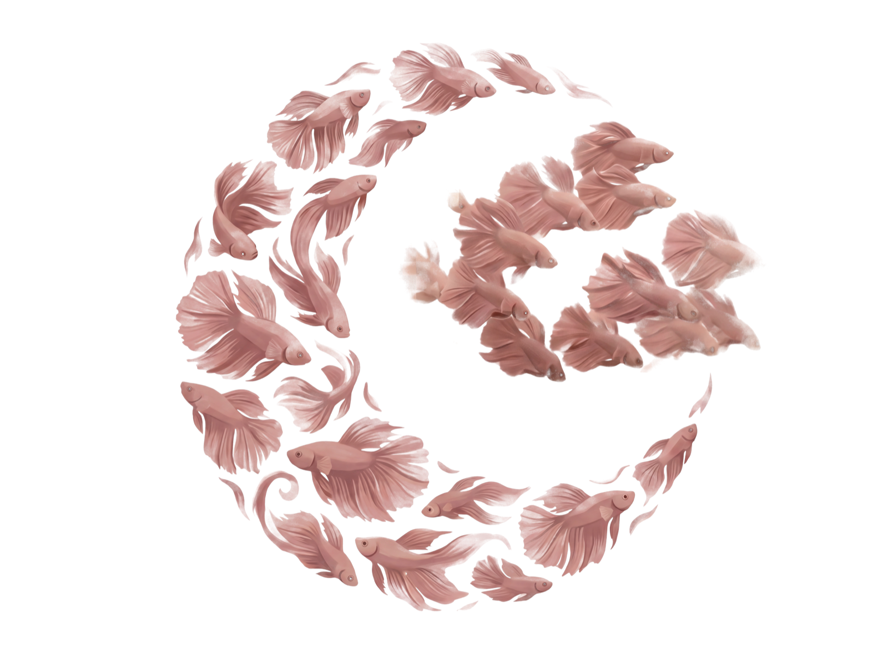
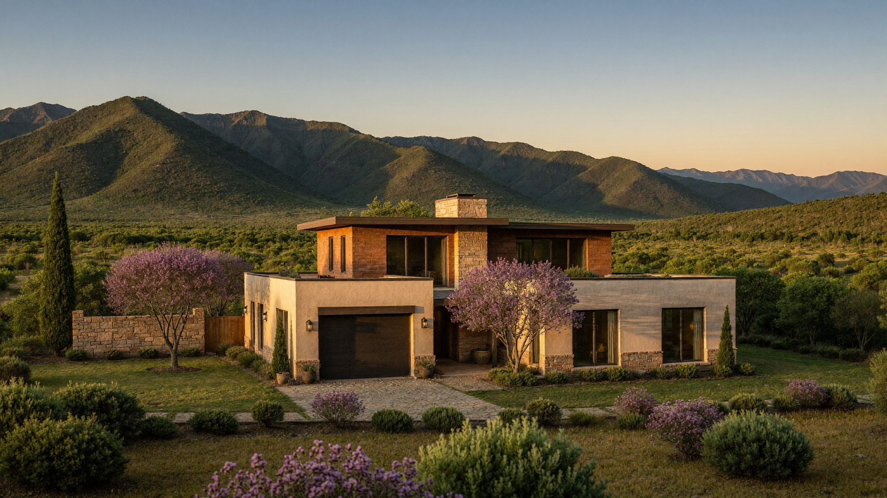
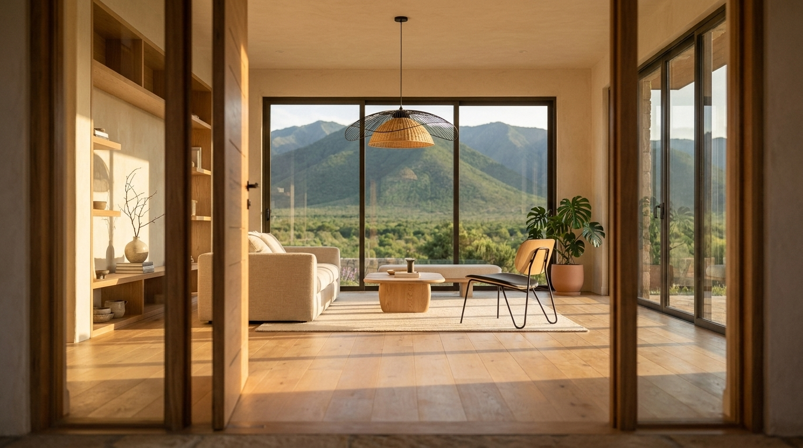

Made by hand.
Studio of imagined worlds

Cinematic FilmsBrand IdentityDwellings

Made by hand.
Studio of imagined worlds
Cinematic FilmsBrand IdentityDwellings
Cinematic worlds, brand identities, films, and properties, built for stories worth telling.
Films and stories. Cinematic worlds. Magical realism. Sci-fi narratives.
Visual systems for brands. Crafted, not templated.
Listings that feel like the place. AI-rendered, human-directed.


A life lived across continents does something to the way you see the world.
The stories were always there. Now they have somewhere to go.
Living across continents and languages teaches you to read the world differently: to find what’s authentic in a culture, what a brand could become, what a story is really about before anyone says it out loud.
That instinct deepened at MediaMonks, a global marketing and technology powerhouse, working on campaigns for brands that define culture. It’s where a passion for storytelling met the discipline of production: understanding what makes a campaign land, what gives a visual world its internal logic, what turns a vision into something people feel long after they’ve seen it.
Spectralmoon Studio exists at that intersection. We build cinematic films, brand identities, and visual narratives for founders and brands who believe their story deserves to be told with real craft. Every project begins the same way: with imagination. The campaign that hasn’t been made yet. The world the brand could inhabit. The feeling the film should leave behind. Then we build it.
still imagining · still building